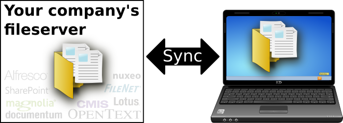
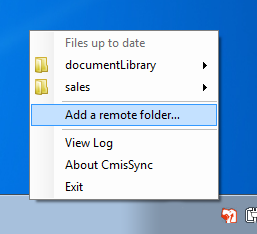
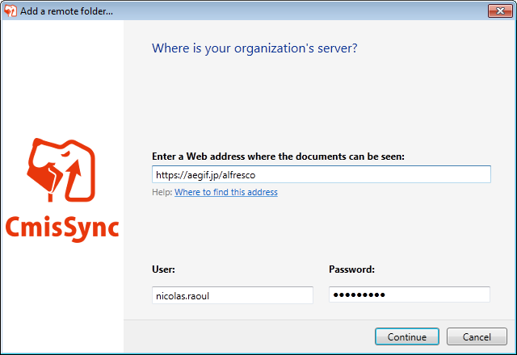
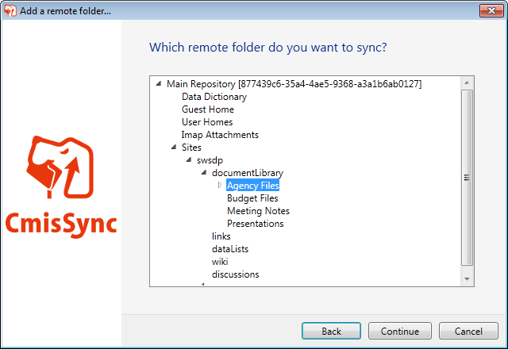

CmisSync allows you to keep in sync with your company's file server, and read/edit the documents even when offline:

Need to read a report in the plane?
Need to check the price list while in your client's no-network meeting room?
→ No problem, the latest files are on your laptop already.
As a bonus, documents open faster, no network latency.
It is like Dropbox for Enterprise Content Management!
- You already have a file server, keep using it. Duplication=versioning nightmare.
- Dropbox becomes very expensive for enterprise volumes.
- Don't trust a third-party with your confidential information.
→Download← (Available for Windows 7/8. Vista, Mac, Linux will follow soon)
(.NET Framework 4.5 needed)
Features
- Two-way sync
- Conflict handling
- Easy to install
- Compatible with any CMIS-compliant server
- Open source
Screenshots
  Tutorials
CmisSync works with any CMIS-compliant server, but we created tutorials for the most populars:
- Offline desktop sync for Alfresco (French, Japanese)
- Offline desktop sync for Nuxeo (French)
- Offline desktop sync for SharePoint
- Offline desktop sync for Google Drive
CmisSync is Open Source, get involved!
CmisSync is Open Source software and licensed under the GNU-GPLv3. You are welcome to change and redistribute it, see the license for details.
CmisSync is mostly developed by Aegif, but all contributions are welcome!
Everybody can help:
Testers: Install CmisSync and report bugs,
Developers: Get the source and choose from the issue tracker, thanks a lot!
Anyone: Translate CmisSync into your language. CmisSync is already available in English, French, Japanese, Klingon, Spanish, Ukrainian.
About CMIS
CMIS (Content Management Interoperability Services) is an OASIS standard that allows any ECM client to communicate with any ECM repository (a bit like the HTML standard allows all web browsers to communicate with all web servers). CMIS is backed by all major content management vendors, and is supported by the following ECM servers: Alfresco, Adobe Experience Manager, EMC Documentum, IBM FileNet, IBM Lotus, eXo Platform, Interwoven, KnowledgeTree, Magnolia, Microsoft SharePoint, NemakiWare, Nuxeo, OpenText and many others.